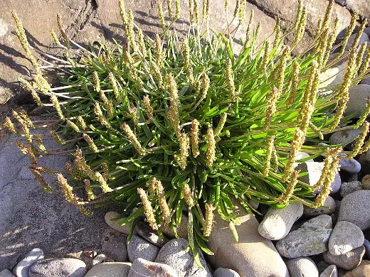

Seaside plantain
Seaside plantain is a wild green you can forage from May to August in Northeast, Pacific Northwest, Alaska and California. Narrow, fleshy, grass-like leaves in rosettes on salt marshes and cliffs.

When is seaside plantain in season in the United States?
Seaside plantain is usually in season May to August. Timing shifts with weather, latitude and altitude.
Where does seaside plantain grow in the United States?
Seaside plantain grows in Alaska, California, Connecticut, Delaware, District of Columbia, Hawaii, Idaho, Maine, Maryland, Massachusetts, New Hampshire, New Jersey, New York, Oregon, Pennsylvania, Rhode Island, Vermont, Virginia, Washington, West Virginia. Regions: Northeast, Pacific Northwest, Alaska, California.
How do you recognise seaside plantain?
Narrow, fleshy, grass-like leaves in rosettes on salt marshes and cliffs.
How do you harvest seaside plantain?
Pinch off young tips and top leaves before the plant flowers, when they are tender and mild. Leave the roots and lower leaves so it regrows. Pick away from roads, sprayed verges and dog-walking paths.
How do you eat seaside plantain?
Blanched or sautéed, like salty green beans.
How do you store seaside plantain?
Blanch and freeze.
What is seaside plantain good for?
Iron & calcium.